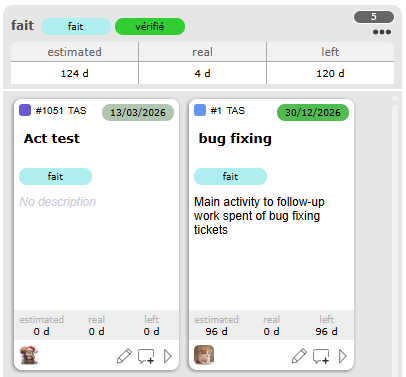
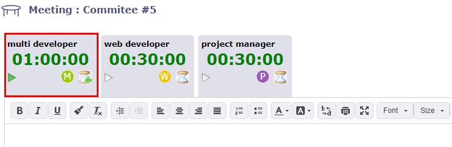
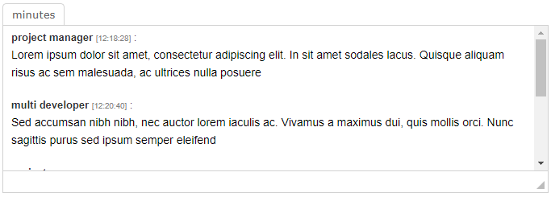

Les méthodes Agiles sont des groupes de pratiques de pilotage et de réalisation de projets. Elles sont issues du Manifeste Agile, rédigé en 2001, qui utilise le terme « agile » pour désigner plusieurs méthodes existantes.
Les méthodes Agiles sont plus pragmatiques que les méthodes traditionnelles, impliquent le client autant que possible et permettent une grande réactivité à ses demandes. Elles reposent sur un cycle de développement itératif, incrémental et adaptatif, et doivent respecter quatre valeurs fondamentales, fondées sur douze principes, dont découlent un ensemble de pratiques, communes ou complémentaires.
Une User Story représente une exigence fonctionnelle exprimée du point de vue de l’utilisateur.
Dans ProjeQtOr, les User Stories sont des objets Agile de premier plan, pleinement intégrés aux fonctionnalités de planification, de suivi et de rapports.
Lorsqu’une User Story change de statut, le statut de l’Epic et du Sprint est mis à jour avec le statut le plus bas (dans l’ordre) parmi l’ensemble des User Stories de l’Epic / du Sprint.
Une User Story suit généralement la structure standard suivante :
En tant que (Persona : Utilisateur, utilisateur avancé, responsable métier,…)
Priorité Scrum : aide à la priorisation du backlog.
Story points : estimation de l’effort.
Valeur métier : importance d’un point de vue métier.
Statut : enregistré, à faire, en cours, terminé, clôturé, annulé.
Les User Stories progressent dans leur cycle de vie soit depuis le Backlog Agile (phase de planification), soit via le tableau de bord Sprint (Kanban) lors de l’exécution.
Tous les changements de statut sont synchronisés automatiquement entre les vues.
Un Epic est un conteneur de haut niveau regroupant plusieurs User Stories autour d’un thème fonctionnel ou d’un objectif majeur.
Lorsqu’une User Story change de statut, le statut de l’Epic est mis à jour avec le statut le plus bas (dans l’ordre) parmi l’ensemble des User Stories de l’Epic.
Les Epics permettent aux équipes de :
structurer le Product Backlog,
suivre l’avancement à un niveau macro,
aligner le développement sur les objectifs stratégiques.
Un Epic ne représente pas une charge de travail de la taille d’un Sprint ; il couvre généralement plusieurs Sprints.
une itération temporelle (généralement de 2 à 4 semaines).
Lorsqu’une User Story change de statut, le statut du Sprint est mis à jour avec le statut le plus bas (dans l’ordre) parmi l’ensemble des User Stories du Sprint.
Dans ProjeQtOr, un Persona représente un profil utilisateur type interagissant avec le produit ou les livrables du projet. Les Personas aident les équipes à mieux comprendre pour qui les fonctionnalités sont développées, et garantissent que les User Stories restent alignées sur les besoins réels des utilisateurs.
Les Personas ne sont pas des rôles techniques ; ce sont des profils fonctionnels ou comportementaux.
Voici des exemples typiques :
Utilisateur : utilisateur final standard de l’application.
Utilisateur avancé : utilisateur expert avec un usage étendu et des attentes élevées.
Responsable métier : décideur axé sur les rapports et la valeur métier.
Administrateur : administrateur technique ou fonctionnel du système.
Documentez facultativement le Persona à l’aide des éléments suivants :
Contexte : environnement et contexte d’utilisation.
Objectifs et comportements : buts, motivations, habitudes.
Ce que cela implique : implications fonctionnelles ou ergonomiques pour le produit.
Ces champs descriptifs sont fortement recommandés pour améliorer la compréhension partagée au sein de l’équipe.
Depuis le tableau de bord Sprint, consultez le Burndown Chart.
Le graphe affiche :
La courbe idéale (descente linéaire).
La progression réelle (points de story restants).
Vérifiez si l’équipe est en avance, à l’heure ou en retard.
Le burndown est recalculé automatiquement à chaque changement de Story.
Astuce
Bonnes pratiques et conseils
Décomposez vos User Stories : aucune story ne devrait dépasser la durée d’un Sprint.
Priorisez régulièrement : ajustez le Product Backlog avec le Product Owner.
Limitez le travail en cours (WIP) : évitez d’avoir trop de stories en cours simultanément.
Tenez vos cérémonies Scrum : revue de Sprint, rétrospective, planification.
Combinez les méthodologies Waterfall et Agile : il est possible de disposer de projets utilisant le cycle en V et d’autres utilisant Scrum au sein de la même instance ProjeQtOr.
Note
Pour une utilisation optimale du module Agile dans ProjeQtOr :
Définissez toujours les Personas avant de rédiger les User Stories.
Gardez les Epics orientés métier, et non techniques.
Utilisez les User Stories comme source unique des exigences fonctionnelles.
Appuyez-vous sur le tableau de bord Sprint et le Burndown Chart pour le suivi quotidien de l’exécution.
La méthodologie Kanban est issue de l’industrie automobile japonaise. Elle a été créée dans le but d’optimiser la production.
C’est un outil visuel de gestion des tâches qui permet de suivre les tâches en temps réel, de gérer les priorités et de favoriser la collaboration entre les membres de l’équipe.
Il fonctionne par simple glisser-déposer dans une colonne. Chaque colonne respecte les règles du flux de travail lié à l’élément de votre Kanban.
Type d’élément : vous pouvez définir un Kanban de Tickets, d’Activités, d’Actions ou d’Exigences
Une fois le type d’élément sélectionné, vous devez définir le type de tableau Kanban à appliquer :
Statut : vous gérerez le tableau Kanban le plus standard, basé sur les statuts
Version cible du produit : vous pouvez répartir les tickets selon la version cible du produit
Activité de planification : vous pourrez répartir les tickets parmi les activités de planification, qui peuvent correspondre à vos Sprints dans la méthode Scrum.
Jalon cible Vous gérez vos éléments en fonction des jalons cibles de votre projet
Vous pouvez choisir directement si vous souhaitez partager le Kanban nouvellement créé avec d’autres utilisateurs afin qu’ils puissent l’utiliser.
Lorsque vous partagez un Kanban, les autres utilisateurs verront votre partage dans la liste des Kanbans partagés.
Lorsque le Kanban est organisé par statut, les colonnes contiennent les éléments d’un statut au suivant, dans l’ordre défini par votre flux de travail. Les statuts seront restreints en fonction de votre sélection (filtres et sélecteur de projet).
Lorsque le Kanban est organisé par activité de planification, version du produit ou jalons, la liste contiendra les noms des éléments correspondants ainsi que leur couleur assignée (gris si aucune couleur n’est spécifiée).
La colonne suivante affichera le statut suivant selon votre flux de travail, jusqu’au dernier ou au statut que vous avez défini.
De nombreuses options vous permettent de personnaliser l’affichage de votre Kanban ou de vos tuiles.
Affichage sur le Kanban :
Afficher le travail sur les éléments
Permet d’afficher le travail estimé, réel et restant sur chaque tâche.

Vous pouvez consulter les informations de travail des éléments dans chaque colonne.¶
Afficher les éléments inactifs
Permet d’afficher les éléments clôturés dans les colonnes de votre Kanban.
Afficher les éléments en grand format
Les tuiles de chaque élément s’adapteront à la largeur totale de la colonne. Cela permet d’afficher beaucoup plus d’informations, comme le nom du projet.
La colonne backlog de votre Kanban est masquée par défaut. Elle définit l’état initial de vos tuiles dans votre Kanban. Le backlog est la liste des tâches en attente : il regroupe toutes les idées, demandes ou travaux à réaliser qui n’ont pas encore été planifiés ou démarrés.
et pour la personnalisation des tuiles :
Statut
Version du produit
Activité de planification/parente
Responsable
Priorité
Urgence
Date de fin planifiée
Type
Nom du projet
Colorier l’arrière-plan du titre selon la couleur du projet/activité/couleur planifiée ou du type.
Appliquer la couleur à toute la tuile
Différence entre la tuile d’un ticket et celle d’une activité sans options d’affichage et avec toutes les options¶
Toutes ces options vous permettent d’avoir des tuiles simples ou des tuiles offrant un maximum d’informations.
Le travail estimé, le travail réel et le travail restant de l’élément sélectionné peuvent être affichés.
Si votre profil ne dispose pas des droits pour voir le travail, vous n’aurez pas accès à cette option.
Le format d’affichage du travail (jours ou heures) dépend du paramètre global.
unité pour l’affectation du travail réel pour les Tickets
unité pour la charge de travail pour les Activités
Afficher les éléments inactifs permet d’afficher ou non les éléments inactifs (clôturés, annulés, en pause, etc.)
Par défaut, les colonnes du tableau Kanban affichent deux tuiles côte à côte. En affichant les tuiles en mode large, chaque tuile occupe la largeur maximale de la colonne et permet d’afficher beaucoup plus d’informations.
Astuce
Lorsque vous créez un Kanban, vous ne disposez pas encore de colonnes représentant un statut, un ensemble de statuts ou des versions.
Les tuiles apparaissent alors dans une colonne Backlog. Vous avez la possibilité d’afficher ou de masquer cette colonne.
Cliquez sur le bouton pour modifier l’élément directement depuis l’écran Kanban. Une fenêtre contextuelle s’affiche avec les informations de votre élément, comme sur l’écran dédié.
L’en-tête de l’élément déplacé devient alors vert lorsqu’il se trouve sur une colonne où le déplacement est autorisé, et rouge lorsqu’il se trouve sur une colonne où le déplacement est interdit.
Si le Kanban est organisé par statuts, le nouveau statut après déplacement sera le premier statut de la plage définie pour la colonne.
Pour les Kanbans basés sur la version cible du produit et les activités de planification, la nouvelle valeur du champ sera simplement la cible.
Cependant, le changement de « statut » doit respecter la configuration du flux de travail pour le type d’élément concerné. C’est pourquoi certains déplacements sont interdits.
Les déplacements autorisés se distinguent facilement des déplacements interdits par la couleur de l’en-tête du Ticket ou de l’Activité déplacée.
En fonction de la configuration du type de ticket, certains changements d’état peuvent nécessiter la saisie de nouveaux champs.
Par exemple, dans la configuration par défaut, lors du passage à l’état « assigné », le champ « responsable » est obligatoire, et lors du passage à l’état « terminé », le champ « résultat » est obligatoire.
Dans ce cas, lorsque vous déplacez un ticket dans les colonnes Kanban, une fenêtre contextuelle apparaît pour vous permettre de saisir la valeur manquante si elle n’est pas déjà définie.
Si les paramètres de vote et vos droits vous autorisent à voter sur un élément, le bouton de vote sera cliquable et vous pourrez voter directement sur l’élément depuis l’écran Kanban.
Cliquez sur pour démarrer la réunion et commencer à décrémenter le temps de parole
Cliquez sur pour arrêter la réunion et fermer la fenêtre LiveMeeting afin de revenir à l’écran de réunion en cours
Cliquez sur pour mettre en pause le temps de parole de l’intervenant
Désigner l’organisateur
Avant de démarrer la réunion, vous pouvez désigner un organisateur qui aura besoin de temps de parole supplémentaire pour animer la réunion.
Pour le désigner, cliquez deux fois sur le sablier afin d’obtenir le symbole sur l’icône.
L’organisateur est désigné et voit son incrément de temps doubler en prélevant équitablement du temps sur les autres participants.

L’organisateur désigné dispose d’un signe Plus sur l’icône de sablier de son onglet¶
Notez qu’un seul participant peut être défini comme organisateur.
Pour désigner un autre participant comme organisateur, vous devez d’abord redéfinir l’organisateur actuel en participant normal en cliquant à nouveau sur le bouton sablier.
Temps de parole
Si vous avez démarré la réunion en cliquant sur l’icône Lecture en haut à droite de l’écran, alors le premier intervenant affiché, celui avec le signe vert, prend la parole en premier.
Dans le cas contraire, cliquez sur l’onglet de l’intervenant de votre choix pour démarrer son temps de parole.
Cliquez sur pour empêcher un intervenant de parler
Cliquez sur pour lui redonner la parole
Si vous bloquez le temps de parole d’un intervenant en cliquant sur le sablier, le temps de parole restant de cet intervenant sera redistribué aux autres participants autorisés à prendre la parole.
Rédiger un compte rendu de réunion
Au cours de la réunion, la personne en charge du compte rendu peut consigner et rapporter les propos des différents participants.
L’éditeur de texte est dynamique et réagit aux intervenants qui ont la parole.
Lorsqu’un intervenant a terminé et qu’un autre prend la parole, un champ est ajouté dans l’éditeur de texte avec le nom de l’intervenant et le détail du temps
La pause est également mentionnée, toujours avec le détail du temps.
Lorsque vous arrêtez le LiveMeeting en cliquant sur , le compte rendu de réunion est automatiquement copié dans le champ Compte rendu de la section de traitement.

Le compte rendu de réunion est copié dans le champ compte rendu de la section de traitement¶
Actions, Décisions et Questions
Dans la partie inférieure de l’écran, si le Kanban n’est pas ouvert, vous avez un accès direct aux actions, décisions et questions.
Chaque liste fonctionne comme l’élément standard « élément lié » présent sur presque tous les écrans d’éléments.
Vous pouvez alors lister un élément pour l’ajouter à la liste des éléments liés, mais aussi créer un nouvel élément à ajouter à la liste, exactement comme pour la fonctionnalité Éléments liés.
Tous les éléments liés via cette fonctionnalité apparaîtront dans les éléments liés de la réunion.
Il existe une légère différence avec les éléments liés : lorsque vous cliquez sur le nom d’un élément, vous n’êtes pas redirigé vers celui-ci.
Il s’ouvre simplement dans un formulaire contextuel, vous permettant de le mettre à jour sans quitter l’écran LiveMeeting.
Nouvel élément
Vous pouvez créer, modifier ou supprimer une action, une décision ou une question depuis l’écran Live Meeting.
Cliquez sur en haut à droite de chaque section pour ajouter un nouvel élément
Une fenêtre contextuelle s’ouvre et vous permet de créer et de modifier l’élément sélectionné.
Le Planning Poker, également connu sous le nom de Scrum Poker, est une technique d’estimation ludique basée sur le consensus, principalement utilisée pour estimer l’effort relatif ou la taille des objectifs de développement. (wikipedia)
ProjeQtOr intègre le Planning Poker dans ses fonctionnalités. Vous pourrez planifier une session de Planning Poker comme une réunion et la voir apparaître sur le diagramme de Gantt.
Vous définissez le projet auquel la session est liée, la ou les User Stories ainsi que les votants.
La User Story représente une pratique Agile, utilisée avant tout dans Scrum, pour « capturer » les besoins des utilisateurs en exprimant de manière générale et non détaillée les caractéristiques, les fonctions et les exigences du produit à créer.
Dans ProjeQtOr, une User Story peut être un ticket, une activité ou une exigence.
Une session peut contenir plusieurs User Stories, sans limite de nombre.
Chacune de ces User Stories peut être démarrée individuellement, en partie ou en totalité.
Participants
Les participants peuvent être des ressources, des contacts ou des utilisateurs.
Les participants sont assignés comme sur une activité, avec une fonction liée à un coût.
Vous pouvez affecter une charge manuellement, mais si vous avez saisi un créneau horaire, la charge est calculée automatiquement.
Mettre en pause et arrêter la session
Vous pouvez mettre la session en pause. Cela retirera les User Stories de l’écran d’estimation du Planning Poker sans pour autant clôturer ou arrêter la session.
Arrêter la session modifiera le statut de celle-ci en « terminé ».
Les User Stories resteront visibles sur l’écran d’estimation du Planning Poker, mais il ne sera plus possible de voter.
Changez le statut en en cours pour que les boutons pause et clôturé soient à nouveau visibles.
Clôturer une session de poker
Lorsque tous les votes sont enregistrés, vous disposez de deux options :
Clôturer le vote
Retourner les cartes
Lorsque vous retournez les cartes, le vote est indiqué sur la carte de chaque participant.
Si vous clôturez sans que les votes soient unanimes, au moment de la clôture, les valeurs minimale et maximale sont affichées.
La valeur la plus basse est sélectionnée par défaut, mais vous pouvez cliquer sur la valeur la plus haute pour la sélectionner, ou choisir une autre valeur dans la liste déroulante.


 pour copier ce Kanban
pour copier ce Kanban pour modifier ce Kanban
pour modifier ce Kanban pour partager ce Kanban. L’icône est remplie lorsqu’il est déjà partagé.
pour partager ce Kanban. L’icône est remplie lorsqu’il est déjà partagé. pour supprimer ce Kanban
pour supprimer ce Kanban{kind=link}
{kind=link}

{kind=link}


{kind=link}
{kind=link}
 pour ajouter un nouveau ticket dans le tableau Kanban ou
pour ajouter un nouveau ticket dans le tableau Kanban ou{kind=link}
{kind=link}
{kind=link}


 ID de l’élément et couleur de la couleur du projet
ID de l’élément et couleur de la couleur du projet Le type de l’élément
Le type de l’élément La date d’échéance planifiée de l’élément
La date d’échéance planifiée de l’élément Le nom de l’élément. La couleur d’arrière-plan dépend de l’option sélectionnée : projet, priorité ou urgence.
Le nom de l’élément. La couleur d’arrière-plan dépend de l’option sélectionnée : projet, priorité ou urgence. Statut dans lequel se trouve la tuile par rapport à votre Workflow.
Statut dans lequel se trouve la tuile par rapport à votre Workflow. La description de l’élément.
La description de l’élément. La version cible du produit.
La version cible du produit. L’activité de planification ou activité parente liée à l’élément.
L’activité de planification ou activité parente liée à l’élément. Travail estimé | Travail réel | Travail restant.
Travail estimé | Travail réel | Travail restant. Responsable du travail - Le nom s’affiche au survol de la souris.
Responsable du travail - Le nom s’affiche au survol de la souris. Priorité de l’élément - Les Priorités sont personnalisables.
Priorité de l’élément - Les Priorités sont personnalisables. Urgence de l’élément - Les Urgences sont personnalisables.
Urgence de l’élément - Les Urgences sont personnalisables. modifier l’élément dans une fenêtre contextuelle.
modifier l’élément dans une fenêtre contextuelle. Ajouter une note. Le nombre de notes est affiché sur l’icône.
Ajouter une note. Le nombre de notes est affiché sur l’icône. Vote. Le bouton vous permet de voter sur l’élément si vous en avez les droits. Cliquez sur le bouton pour afficher la fenêtre contextuelle de vote.
Vote. Le bouton vous permet de voter sur l’élément si vous en avez les droits. Cliquez sur le bouton pour afficher la fenêtre contextuelle de vote. Accéder à. Le bouton vous permet d’accéder à la page de l’élément si vous en avez les droits.
Accéder à. Le bouton vous permet d’accéder à la page de l’élément si vous en avez les droits.pour enregistrer vos modifications


 pour quitter l’écran LiveMeeting
pour quitter l’écran LiveMeeting pour gérer vos Kanbans depuis le LiveMeeting
pour gérer vos Kanbans depuis le LiveMeeting{kind=link}

 pour démarrer la réunion et commencer à décrémenter le temps de parole
pour démarrer la réunion et commencer à décrémenter le temps de parole pour arrêter la réunion et fermer la fenêtre LiveMeeting afin de revenir à l’écran de réunion en cours
pour arrêter la réunion et fermer la fenêtre LiveMeeting afin de revenir à l’écran de réunion en cours pour mettre en pause le temps de parole de l’intervenant
pour mettre en pause le temps de parole de l’intervenantafin d’obtenir le symbole sur l’icône.
en haut à droite de chaque section pour ajouter un nouvel élément
pour sélectionner un élément dans la liste
pour créer un élément
pour annuler l’opération en cours et fermer la fenêtre
pour appliquer un filtre et restreindre l’affichage


{kind=link}


 pour actualiser votre écran et les votes
pour actualiser votre écran et les votes